先软化 — 别直接给自己打分It's hard to judge yourself, honestly. / I'd like to think so. / That's for other people to say.
再给证据 — 说行为，不说形容词I always plan my week in advance and I hate being late, so I'd say yes on punctuality.
最后留余地 — 承认程度和例外Though I'm not like that with everything — my desk is a disaster.
这个「三步」是本节课本答案的原型。课本例题回答 Do you think you are conscientious? 时，第一句就是
"Why don't you ask someone else? Obviously, I'm prejudiced about my own character."
—— 先说自己评价自己不客观，后面所有的话就都站得住了。这个开场白值得原样背下来。
02这类问题的三种打法
25 个问题的句式完全一样，变的只是形容词。所以真正要练的是三种应答策略，而不是 25 个答案。
A · 三种策略，按你的真实情况挑
策略
什么时候用
英语怎么开头
承认 + 举证
这个特质你确实有，而且能说出具体的事
I'd say yes — for example… / I think so, actually. Last month I…
半承认 + 限定
大体上是，但分场合。这是最真实、最好用的一档
In some ways, yes. With work I'm…, but at home… / It depends what you mean by…
否认 + 自嘲
这个特质你确实没有，与其硬撑不如笑着承认
Definitely not. / I wish. / Ask my roommate and you'll get a different answer.
B · 五个「软化开场」，比直接回答高级得多
I'd like to think so.
「我愿意这么认为」——承认希望如此，但不把话说死。答这类题最万能的一句
That's for other people to say.
「这该由别人来评价」——既谦虚又漂亮地回避了自夸
It depends what you mean by…
「看你怎么定义……」——争取时间，顺便展示你在思考
In some ways, yes.
「某些方面是的」——最实用的半承认开场
Ask my friends — they'd say…
「你去问我朋友，他们会说……」——把评价转给别人，还顺便带出一个具体印象
不要用 I am a very honest person 这种说法。
直接给自己贴形容词，英语里听起来像自我推销。母语者的习惯是说事，让对方自己下结论：
I once found a wallet on the street and spent an hour tracking down the owner.
说完这句，不用再说 honest，老师已经知道了。
Do you think you are conscientious? /ˌkɑːnʃiˈenʃəs/
What you seeA man at a desk covered in piles of paper, working on a laptop, and behind him another man with steam coming out of his head, shouting. The clock says 14:53 — deadline pressure.
What it meansconscientious = 认真负责的、做事凭良心的。注意它和 conscious（有意识的）不是一回事，只是长得像。
Say it like this"Why don't you ask someone else? Obviously, I'm prejudiced about my own character. But I will say that I always try to do my best. I don't think I ever deliberately slack off on a project. Sometimes I fail to do something perfectly, but that's because I didn't have enough time or I didn't clearly understand the task. Under the circumstances, I couldn't have done the job better than I did."
这段里最值得偷的一句："Under the circumstances, I could not have done the job better than I did."
这是一个虚拟语气（could not have done），意思是「在当时的情况下我已经做到最好了」。把「没做好」和「尽力了」同时说出来，是英语里替自己辩解时最体面的说法。
03二十五个问题：怎么答出层次
每张卡三段：What you see 照着图描述，What it means 说清这个词到底指什么，Say it like this 给三档答案：① 一句短答 / ② 加原因 / ③ 加一个具体例子。第三档最好用你自己的真事替换。
01
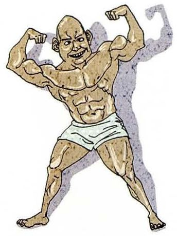
Do you think you are healthy?
What you seeA bodybuilder in tiny shorts, flexing both arms and showing off his muscles. He's the picture of peak condition.
What it means问健康状况。healthy 指「健康的」，比 well 更常用来描述长期状态。
Say it like this①Reasonably, yes. ②I'm not that fit, but I'm healthy — I don't get sick often and I sleep well. ③I'd say yes on the inside, no on the outside. My check-ups are all fine, but I sit at a desk for ten hours a day, so my back is a mess. I've started walking to the lab instead of taking the bus — it's only twenty minutes, and it's the only exercise I get.
02
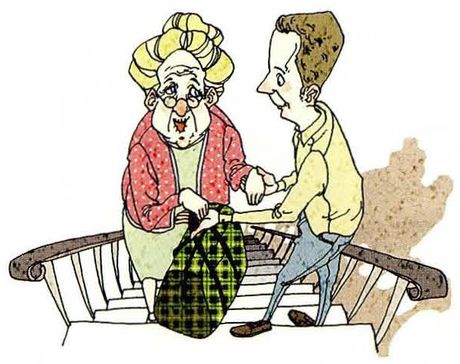
Do you think you are kind?
What you seeA young man sitting on a bench beside an elderly woman with a walking stick and a plaid bag, listening to her. He's given her his attention, not just his seat.
What it means问善不善良。kind 是「待人好心的」，比 nice 更强调主动的善意。
Say it like this①I'd like to think so. ②I try to be. I'm not the type who does big gestures, but I'll always stop if someone looks lost. ③That's for other people to say, honestly. But I do notice small things — if a classmate's been quiet for a few days I'll message them. My mum's the same way, so I probably just copied her.
03
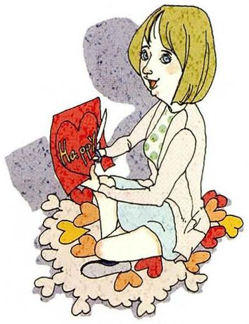
Do you think you are happy?
What you seeA woman sitting cross-legged on the floor in a pile of sweets and candies, holding a big bar of chocolate and smiling. She's treating herself.
What it means问幸不幸福。happy 在英语里既指「开心」，也指「生活满意」，这里两种都算。
Say it like this①Yes, mostly. ②I'm not happy every day, but overall I'd say yes. My life is fairly simple and that suits me. ③I'd separate the two — I'm often stressed, but I'm not unhappy. Doing a PhD is like that: the work is hard and nobody claps, but I chose it. When I get a result that actually works, even a small one, I'm genuinely happy for a whole afternoon.
04
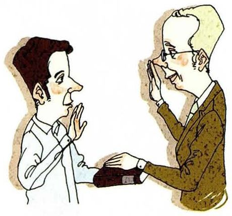
Do you think you are honest?
What you seeA man with one hand pressed to his heart, the other raised, talking to an older man in a brown suit who's holding what looks like a wallet. A promise is being made.
What it means问诚不诚实。honest 是「不说谎的」，比 frank（说话直）范围大。
Say it like this①I try to be, yes. ②I don't lie about big things. Small things, though — I'll say a meeting went well when it didn't. ③There's a difference between not lying and volunteering the truth. I'm the first kind, not always the second. Once I found a wallet with about two hundred yuan in it and I did track the owner down — but I also remember being slightly annoyed about the time it took, which tells you something.
05
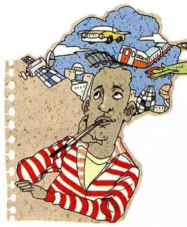
Do you think you are imaginative?
What you seeA man in a striped shirt smoking a pipe, with a big cloud above his head full of vehicles — a car, a train, a plane, a rocket, a satellite. His mind is somewhere else entirely.
What it means问有没有想象力。imaginative 形容人「有创造力的」，注意别和 imaginary（虚构的）混。
Say it like this①Yes, I think so. ②Quite, yes. I'm always the one suggesting the strange idea in a group project. ③I'm imaginative in a very specific way — I can picture a system in my head and see where it breaks before I build it. But ask me to invent a story and I'm useless. So it depends what kind of imagination you mean.
06
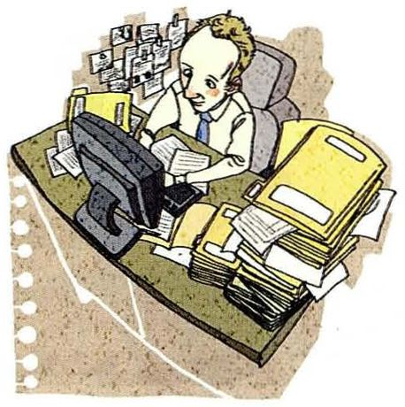
Do you think you are diligent?
What you seeA woman bent over a laptop at a desk, completely surrounded by stacks of papers and photographs. Nobody's making her do this.
What it means问勤不勤奋。diligent 偏书面，日常口语更常说 hard-working。
Say it like this①Yes, I'd say so. ②I'm diligent about things I care about, and lazy about everything else. There's no middle ground with me. ③Diligent isn't quite the right word — I'm stubborn. I'll redo an experiment five times if the numbers look odd, but I still haven't answered my emails from three weeks ago. So I work hard, just not evenly.
07
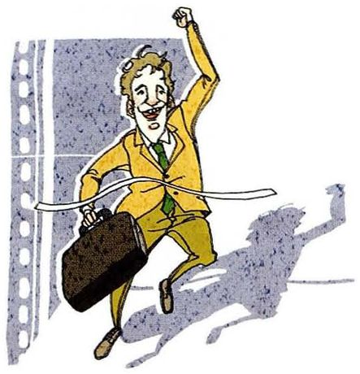
Do you think you are successful?
What you seeA man in a bright yellow suit jumping off the ground with one fist in the air, briefcase swinging. Pure triumph.
What it means问成不成功。successful 在英语里常指「事业有成的」，问年纪轻的人时容易被理解成「赚到钱了吗」。
Say it like this①Not yet. / By whose standard? ②Depends how you measure it. By money, no. By whether I'm doing what I wanted to do at eighteen, yes. ③I'm wary of that word, because it usually means salary. On that scale I'm not. But I got into a programme I thought was out of reach, and I'm the first in my family to do a PhD — my parents would call that successful, and I think they're right.
08
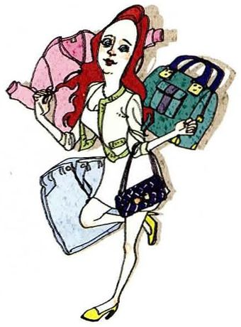
Do you think you are fashionable?
What you seeA woman striding along carrying three or four shopping bags, dressed up and clearly enjoying being seen. She's just been shopping.
What it means问穿不穿得时尚。fashionable 形容「合乎潮流的」，stylish 更偏「有品位的」。
Say it like this①Definitely not. / Absolutely not. ②No, not at all — I wear the same three things. I'd rather be comfortable than stylish. ③I'm not fashionable, but I'm not careless either. My rule is that everything has to work with everything else, so I only buy black, white and grey. It looks like a choice but it's really just a way of not having to think in the morning.
09
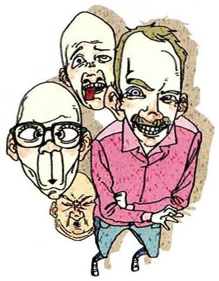
Do you think you are humorous?
What you seeThree men crowded together, all laughing — the one in front is grinning and seems to be the one who just said something.
What it means问有没有幽默感。humorous 是形容词，但口语里更常说 funny。
Say it like this①I have my moments. ②I'm funny in Chinese and only mildly amusing in English — the jokes don't survive the translation. ③I'm the person who says the thing everyone was thinking, which either makes the room laugh or makes it awkward. So: humorous, but not safe. My lab mates would probably tell you to be careful what you say around me.
10
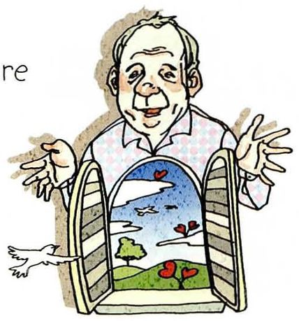
Do you think you are open-minded?
What you seeA man swinging open a little door in his chest, and inside there's a view of fields, a tree and the sky. The picture takes "open" literally.
What it means问思想开不开明。open-minded 指「愿意接受不同意见的」，反义 narrow-minded。
Say it like this①I'd like to think so. ②Yes, mostly. I'll change my mind if you give me a good reason — but I do need the reason. ③On opinions, yes. On my own field, less than I'd like — I notice I get defensive when someone outside it criticises the method. That's the test, isn't it? Being open-minded about things you don't care about is easy.
11
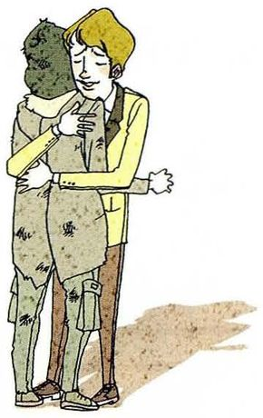
Do you think you are sympathetic?
What you seeTwo people holding each other, one with a hand on the other's back. Somebody is being comforted.
What it means问有没有同情心、懂不懂体谅人。注意 sympathetic 是「有同情心的」，不是「值得同情的」。
Say it like this①I think so, yes. ②I'm a good listener, but I'm not good at the comforting part — I go straight to solving the problem. ③My instinct is to fix things, which isn't always what people want. A friend told me once, "I don't need you to have an answer, I need you to sit here." That was a useful correction — I've been trying to just sit there since.
12
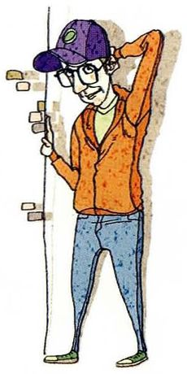
Do you think you are shy?
What you seeA young man in a purple cap and orange jacket leaning against a wall, one hand behind his neck, looking away. He'd rather not be noticed.
What it means问腼不腼腆。shy 指「在生人面前不自在」，和 introverted（内向，喜欢独处）不是一回事。
Say it like this①I used to be. / Yes, quite. ②I'm not shy once I know people, but the first ten minutes in a room of strangers are painful. ③I'm not shy so much as slow. I need a while to warm up, and people read that as shyness. By the second meeting I won't shut up — ask anyone who's been in a group project with me.
13
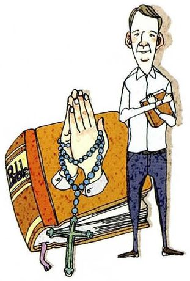
Do you think you are religious?
What you seeA man with his hands clasped in prayer, standing over a heavy old book and a string of rosary beads. He's mid-prayer.
What it means问信不信仰宗教。religious 形容人；说「宗教」这个名词是 religion。
Say it like this①No, not really. ②I'm not religious, but I was brought up around it, so I understand the vocabulary. ③I wouldn't call myself religious. My grandmother was, and I liked going to the temple with her as a child — but I think what I liked was the quiet, not the belief. So I'm somewhere between not religious and not entirely without it.
14
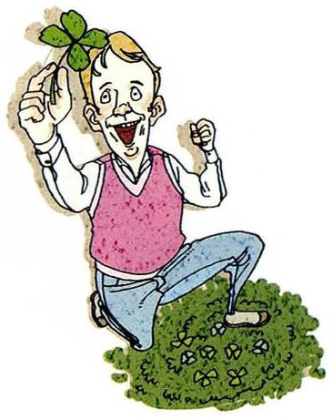
Do you think you are superstitious?
What you seeA man kneeling on the lawn holding up a four-leaf clover in one hand and something small in the other, looking delighted. He's found his luck.
What it means问迷不迷信。superstitious 重音在第三音节 /ˌsuːpərˈstɪʃəs/，很多人读错。
Say it like this①A little bit, yes. ②I don't believe in any of it, but I still won't walk under a ladder. I know it's nonsense. ③I'd say I'm selectively superstitious. Logically I know there's no connection between the number four and bad luck — but I've never once chosen a fourth floor. And I always wear the same shirt before a presentation, which I'd deny if you asked me in daylight.
15
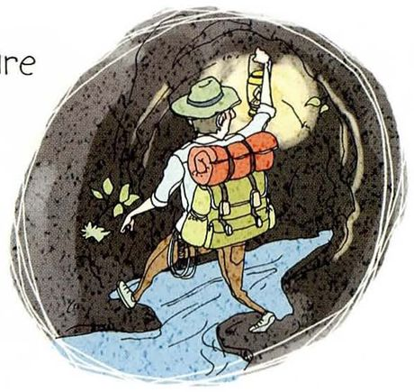
Do you think you are adventurous?
What you seeA hiker with a big orange backpack stepping across a stream in a dark cave, holding a light. Nobody knows where they are.
What it means问爱不爱冒险。adventurous 可以指爱旅行探险，也可以指「敢尝试新事物」。
Say it like this①In some ways, yes. ②Adventurous with places, not with food. I'll fly somewhere I've never been, but I'll still order the same thing. ③I'm adventurous if there's a plan. I'll go hiking alone for a week, but I want to know where I'm sleeping each night. So — adventurous, but with a spreadsheet. My friends find that funny.
16
Do you think you are hasty?
What you seeA man hurrying somewhere, arms full of folders, papers flying out behind him and a cup tipping over. He's moving faster than he can manage.
What it means问做事急不急躁。hasty 带贬义，指「没想清楚就动手」，比 quick 负面得多。
Say it like this①Yes, unfortunately. ②I'm hasty when I'm stressed — I'll send an email I should have slept on. ③I used to be very hasty — I'd start coding before I understood the problem, then throw it all away. What fixed it was having to redo things so many times that I got embarrassed. Now I write the plan down first, even if it's three lines.
17
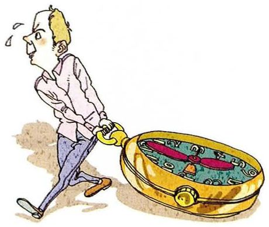
Do you think you are punctual?
What you seeA man striding along with sweat on his brow, dragging a giant pocket watch beside him. He's battling the clock.
What it means问守不守时。punctual 稍正式，口语常说 on time。
Say it like this①Very. Almost too much. ②I'm always early, which I've realized can be its own kind of rude — it puts pressure on everyone else. ③Extremely, and it's not a virtue — it's anxiety. If a meeting's at nine I'm there at 8:45, walking around the block so I don't arrive first. My supervisor is the opposite: brilliant, and late to everything. We've learned to live with each other.
18
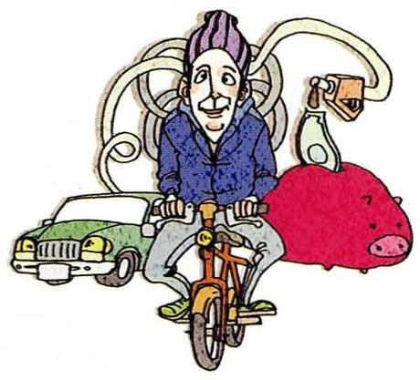
Do you think you are frugal?
What you seeA man riding a bicycle, with a small green car drawn behind him and a big red piggy bank. He's choosing the cheap option on purpose.
What it means问省不省钱。frugal 是褒义（会过日子），cheap 是贬义（小气），别混用。
Say it like this①Yes, quite frugal. ②I'm frugal with things I don't care about and generous with things I do. So: cheap coffee, expensive headphones. ③Frugal is a polite word for it. As a student I had to be, and now I can't stop — I still take the bus to save twelve yuan, then spend two hundred on a book without blinking. My friends say my finances make no sense. They're right.
19
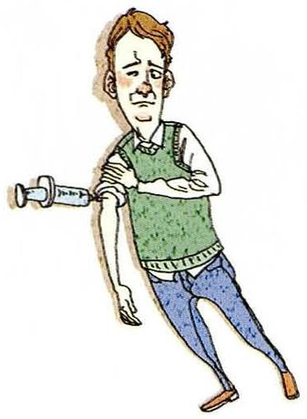
Do you think you are patient?
What you seeA man standing there with his arms folded while a screw is driven into the side of his head. He's not reacting at all.
What it means问耐不耐得住。patient 形容人「有耐心的」，名词是 patience /ˈpeɪʃns/。
Say it like this①With some things, yes. ②I'm patient with work and impatient with people. Waiting three weeks for a result doesn't bother me; waiting three minutes for someone to get to the point does. ③I'm patient in a way that surprises people — I'll debug the same thing for two days without getting angry. But I have no patience for slow conversations. My girlfriend says I answer questions before she's finished asking them.
20
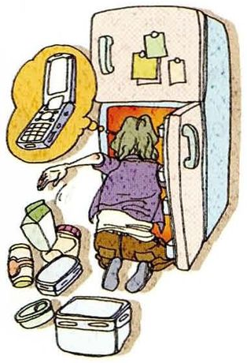
Do you think you are forgetful?
What you seeA woman standing with the fridge door open, staring inside, and a thought bubble with a laptop in it. She came for one thing and forgot what.
What it means问记性差不差。forgetful 是「健忘的」，和 forgettable（不值得记的）完全不同。
Say it like this①Terribly, yes. ②I forget everything that isn't written down, and I've stopped pretending otherwise. ③Extremely forgetful, but only for small things — names, where I put my keys, whether I've eaten. I've never once forgotten a deadline. So my memory is selective, and unfortunately it's selected against my keys.
21
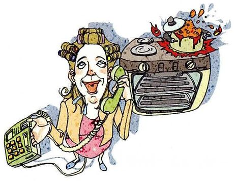
Do you think you are talkative?
What you seeA woman holding a phone to each ear and talking, with a radio blaring beside her. She's doing three conversations at once.
What it means问话多不多。talkative 中性偏褒，chatty 更随意，gossipy 才是贬义。
Say it like this①Way too talkative. ②I'm talkative when I'm comfortable and completely silent when I'm not. There's no middle setting. ③Painfully talkative, and I know it. I'll explain something for five minutes when one sentence would do. My lab mate once timed me — apparently I talked for eleven minutes about a coffee machine. I'd like to say I was embarrassed, but honestly I was impressed.
22
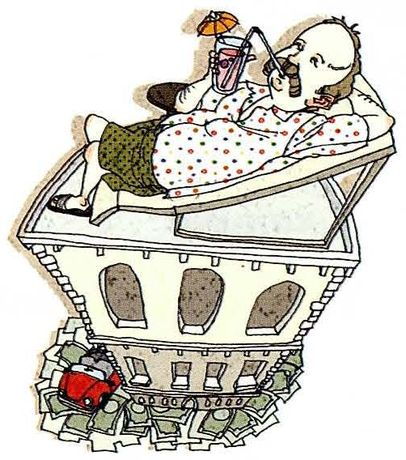
Do you think you are rich?
What you seeA couple lying in bed, both reading, with stacks of banknotes and coins under them and a grand building below. Wealth, comfortably enjoyed.
What it means问有没有钱。rich 和 wealthy 都指有钱，well-off 更委婉，loaded 是俚语。
Say it like this①Not at all. / Compared to whom? ②I'm not rich, but I'm not worried about money either, which is a kind of wealth. ③On a global scale, being a student in China with a laptop and a scholarship makes me richer than most people alive. But ask me whether I can afford a flat in this city and the answer is no. So it depends which comparison I'm using that day.
23
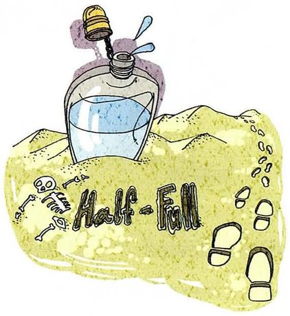
Do you think you are optimistic?
What you seeA bottle floating on the water with liquid inside, and the words Half-Full written on the sand, with footprints leading away. It's the "glass half full" idea made literal.
What it means问乐不乐观。optimistic 是「对未来抱有希望的」，反义 pessimistic。课本用 half-full 这个梗就是这个意思。
Say it like this①Yes, I'd say so. ②I'm optimistic about outcomes and pessimistic about the process. The work will turn out fine; getting there will be miserable. ③I'm the kind of optimistic that looks like stubbornness. Three experiments failed last month and I still went in on Monday expecting the fourth to work. If it hadn't, I'd have gone in on Tuesday the same way. I don't know whether that's optimism or just not knowing how to stop.
24
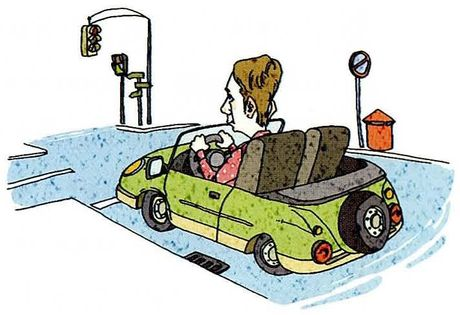
Do you think you are law-abiding?
What you seeA woman in an open-top car stopped at a red light, with a traffic signal above her and a mailbox on the pavement. The road is empty and she's still stopped.
What it means问守不守法。law-abiding 是「守法的」，常和 citizen 连用：a law-abiding citizen。
Say it like this①Completely, yes. ②I'm law-abiding to a slightly embarrassing degree — I'll wait at a red light on an empty road at two in the morning. ③I follow the rules, but I've noticed my reasons are social rather than moral. I don't jaywalk, not because I think it's wrong, but because I'd be mortified if someone shouted at me. So: law-abiding, and a bit of a coward about it.
25
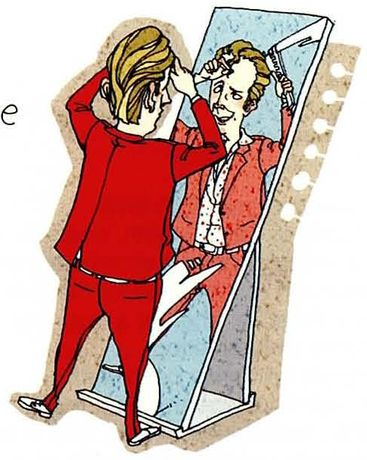
Do you think you are good-looking?
What you seeA woman in a red suit standing in front of a mirror, arranging her hair and checking her reflection. She's making sure.
What it means问好不好看。good-looking 形容人，attractive 更正式，beautiful 偏女性，handsome 偏男性。
Say it like this①I'm okay, I suppose. ②Average, honestly. Not the person anyone remembers from the photo, but not the one anyone avoids either. ③That's the hardest question in this whole lesson, because there's no way to answer it that doesn't sound either arrogant or like you're fishing for a compliment. I'll say this: I look better now than at twenty, because I stopped trying so hard.
a conscientious student / worker 认真负责、凭良心做事。别和 conscious 混
认真负责的
prejudiced
/ˈpredʒədɪst/
I'm prejudiced about my own character. 有偏见的。注意这里不是贬义，是「不客观」
有偏见的
deliberately
/dɪˈlɪbərətli/
I didn't do it deliberately. 故意地。反义 accidentally 意外地
故意地
slack off
/slæk ɔːf/
stop slacking off / slack off on a project 摸鱼、偷懒。非常口语
偷懒
open-minded
/ˌoʊpən ˈmaɪndɪd/
an open-minded person 反义 narrow-minded 心胸狭窄的
开明的
shy
/ʃaɪ/
I'm shy around new people.
腼腆的
punctual
/ˈpʌŋktʃuəl/
He's always punctual. 口语更常说 on time
守时的
frugal
/ˈfruːɡl/
a frugal lifestyle 褒义「会过日子」。小气要用 cheap / stingy
节俭的
optimistic
/ˌɑːptɪˈmɪstɪk/
be optimistic about the future 后接 about
乐观的
law-abiding
/ˈlɔː əˌbaɪdɪŋ/
a law-abiding citizen
守法的
B · 另外 15 个问题里的形容词
词
音标
课上怎么用
中文
imaginative
/ɪˈmædʒɪnətɪv/
an imaginative solution 有想象力的（夸人）。imaginary 是「虚构的」
有想象力的
diligent
/ˈdɪlɪdʒənt/
a diligent researcher 偏书面，口语说 hard-working
勤奋的
humorous
/ˈhjuːmərəs/
a humorous remark 书面；口语说 funny
幽默的
sympathetic
/ˌsɪmpəˈθetɪk/
She was very sympathetic. 有同情心的。不是「被同情的」
有同情心的
superstitious
/ˌsuːpərˈstɪʃəs/
I'm a bit superstitious. 重音在 STI 上
迷信的
adventurous
/ədˈventʃərəs/
an adventurous trip
爱冒险的
hasty
/ˈheɪsti/
a hasty decision 贬义：草率的
急躁的
forgetful
/fərˈɡetfl/
I'm terribly forgetful with names.
健忘的
talkative
/ˈtɔːkətɪv/
She's very talkative.
话多的
good-looking
/ˌɡʊd ˈlʊkɪŋ/
a good-looking guy
好看的
C · 评价自己时最常用的动词块
表达
音标
用法
中文
I'd like to think so
/aɪd laɪk tə θɪŋk soʊ/
我愿意这么认为 —— 答自评题的万能开场
我希望如此
to be honest
/tə bi ˈɑːnəst/
放句首或句末，语气立刻软下来
说实话
tend to
/tend tuː/
I tend to forget names. 描述习惯，不把话说死
倾向于
in some ways
/ɪn səm weɪz/
「某些方面」—— 半承认的标准开头
某种程度上
for other people to say
/fər ˈʌðər ˈpiːpl tə seɪ/
That's for other people to say. 谦虚地回避自夸
该由别人评价
under the circumstances
/ˈʌndər ðə ˈsɜːrkəmstænsɪz/
在那种情况下 —— 替自己辩解时的体面说法
在当时情况下
work on sth
/wɜːrk ɑːn/
I'm working on being more patient. 承认缺点又不失体面
在改进
05老师大概率会问的问题
25 个词老师不会让你一个个自评，一定会挑几个追问，或者反过来让你评价别人。后者更考验描述能力。
Which of these words would your friends use to describe you?
Probably talkative and forgetful — those are the two they tease me about. They'd say punctual as well, but in an annoyed way, because I'm always the one standing at the door saying "shall we go?" If you asked them for a good word, maybe diligent. But you'd get a longer answer about my keys.
Is it polite in Chinese culture to say you're good at something?
Less than in English, yes. In Chinese I'd say "I'm still learning" even if I'm the best in the room. In English that reads as either modest or evasive — people want to know what you can actually do. I had to get used to saying "I'm good at this" without feeling like I was showing off.
Do you think people can change how conscientious they are?
Partly. I think the baseline doesn't move much — either you care about doing things properly or you don't. But you can build systems around it. I'm not naturally organised, so I use a calendar for everything and it makes me look conscientious. Whether that counts as changing, I'm not sure.
the baseline doesn't move much（底子不太会变）+ you can build systems around it（但可以靠方法弥补），两句话就把一个复杂观点说清了。
Which quality matters most to you in a colleague?
Conscientious, without question. I can work with someone who's slow, or quiet, or doesn't like me. What I can't work with is someone whose work I have to check. Once you have to double-check everything, you might as well have done it yourself.
「排除法 + 一句话说明后果」很有说服力。you might as well have done it yourself 是地道的结论句。
Are you more optimistic or more realistic than you were five years ago?
More realistic, but not less optimistic — I'd separate those now. At twenty I was optimistic about everything because I hadn't tested any of it. Now I know how hard things are, and I still think they'll work out. That feels sturdier than the version I had five years ago.
I'd separate those（我会把这两件事分开）是很高级的思维动作，能立刻把你的回答和别人的拉开差距。
Do you think you are the same person you were at eighteen?
Same instincts, better manners. I still want the same things — to understand something properly and be left alone to do it. But at eighteen I'd have said that in an argument at midnight. Now I just quietly arrange my week around it.
Patience. Not the "waiting" kind — the kind where you let someone finish a bad idea instead of correcting them halfway through. I've cost myself a few relationships by being faster than the conversation.
承认一个真实的缺点，并给一个具体后果（cost myself a few relationships），比泛泛地说「我想更有耐心」有力得多。
06这节课最容易犯的错
这一课的错误很集中：一类是「形容词用错」，一类是「评价自己时语气不对」。
✗I am a very conscientious person, I never make mistakes. ✓I try to be conscientious. I don't think I've ever deliberately slacked off on a project.
直接给自己贴形容词 + 绝对化（never make mistakes），在英语里听起来像自夸还不可信。改成「我尽力」+ 具体行为，效果完全不同。
✗Are you think you are honest? ✓Do you think you are honest?
think 前面要用助动词 do，不是 be。这个错误在 Part II 里出现频率最高。
✗I am a bit superstition. ✓I'm a bit superstitious.
superstition 是名词，superstitious 是形容词。描述人要用形容词。
✗I am economical person. 想说「我节俭」 ✓I'm quite frugal. / I'm careful with money.
economical 通常形容东西（便宜的、省钱的），形容人用 frugal 或 thrifty。另外可数名词单数前不能没有冠词。
✗I have no patient. ✓I'm not very patient. / I have no patience.
patient 是形容词（有耐心的），patience 是名词。丢了 e 意思就散了。
✗I am very like my mother's character. ✓I take after my mother. / I'm a lot like my mother.
「性格像」用 take after 或 be like，不能直译 character。very 也不能修饰 like 作动词的情形。
✗My English is not good, I am a shy person. 用作开场白 ✓I'll do my best. / I might be slow at first, so bear with me.
中国学生最爱用「我英语不好」开场。这在英语课上听起来像在替自己找退路，老师往往不知道怎么接。真想铺垫就用最后那句，既诚实又不消极。
✗I am boring in this class. 想说「我上课觉得无聊」 ✓I found that class boring. / I was bored in that class.
boring 是「让别人觉得无聊」，bored 是「自己觉得无聊」。说 I am boring 等于说自己是个无趣的人。
07五十分钟怎么用
25 个词不必全背。真正值得练的是第 02 节那三种策略和五个软化开场，词可以临场想。
课前 10 分钟：先记五个软化开场I'd like to think so / That's for other people to say / In some ways, yes / It depends what you mean by… / Ask my friends — they'd say…。这五句能接住全部 25 题。